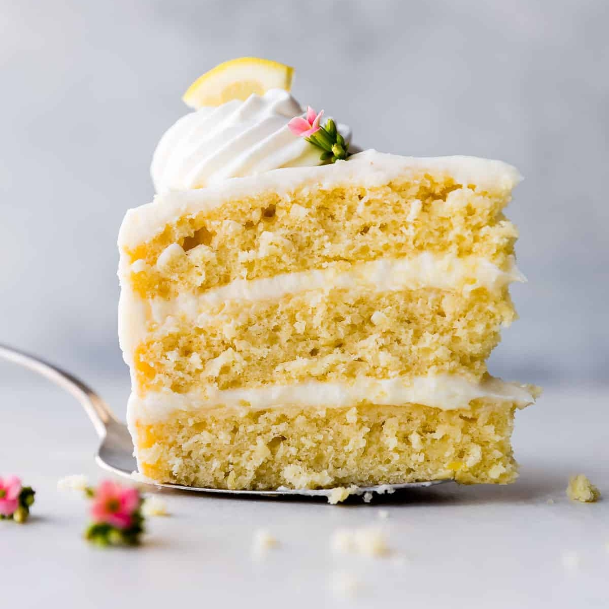

lemon cake

description
bro if you like lemon, you're gonna love this cake!
ingredients
cake
- all-purpose flour (3 cups)
- granulated sugar (1.75 cups)
- unsalted butter (1 cup)
- whole milk (1 cup)
- eggs (3 large)
- lemon juice (0.33 cups)
- lemon zest (1 tbsp)
- vanilla extract (2 tsp)
- baking powder (2.5 tsp)
- baking soda (.5 tsp)
- salt (.5 tsp)
frosting
- powdered sugar (4.5 cups)
- unsalted butter (1 cup)
- full-fat cream cheese (8 oz)
- lemon juice (2 tbsp)
- lemon zest (1 tsp)
- vanilla extract (1 tsp)
steps
- preheat the oven to 350°f
- grease three 8-inch cake pans and line them with parchment paper
- using a mixer on medium-high, beat butter and sugar together until smooth and creamy
- beat in the eggs and vanilla extract until combined
- on low speed, mix in the the flour, baking powder, baking soda, and salt
- mix in the milk, lemon zest, and lemon juice
- pour the batter evenly into the cake pans and bake for 21-26 minutes or until a toothpick inserted in the middle comes out clean
- let the cakes cool completely in the pans on a wire rack
- to make the frosting, beat the butter on medium speed until creamy
- add the cream cheese and beat until smooth
- add the powdered sugar, lemon juice, lemon zest, and vanilla extract and mix on low until combined
- using a long serrated or really sharp knife, slice a thin layer off the tops of the cakes to make them flat (crumbling this over ice cream tastes really good!)
- evenly cover the top of the bottom layer with 1 cup of frosting then top with the middle layer and do the same
- top that with the top layer and spread the rest of the frosting over the top and sides
- refrigerate the cake for at least 45 minutes before slicing to help it hold its shape
- enjoy this citrusy marvel of alchemy!